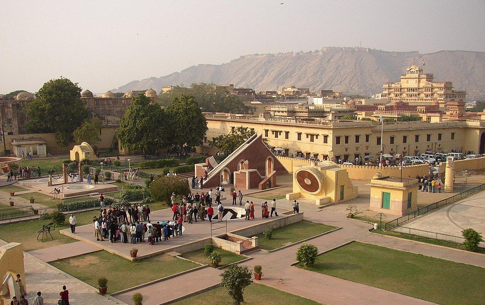

THE VIBRANT JAIPUR!!
THE PINK CITY PAINTS THE SKY WITH HUES OF HISTORY AND CULTURE!!!
The city of palaces and forts, interspersed with historical monuments and gardens that testify the grandeur of the Rajput kings, Jaipur is the gateway to the royal heritage of India. Also called Pink City, the capital of Rajasthan, remains suspended in time, with its heritage preserved in the overwhelming Hawa Mahal that gazes down at the bustling streets of Johari Bazaar.Today, the city is known for its bazaars, forts, temples, palaces, and wildlife sanctuaries.
PLACES OF INTEREST
 HAWA MAHAL |
 AMBER FORT |
 JANTAR MANTAR |
CHAND BAORI |
BHANGARH FORT |
 CITY PALACE |
ITINERARY
DAY 1
After your arrival, our tour representatives will meet and transfer you to the hotel.On this day, visit Amber Fort. View the Sheesh Mahal or the Hall of Victory shining with mirrors. In the evening, proceed with Jaipur sightseeing, visit Maharaja's City Palace & the Observatory. Spend your overnight stay at Jaipur.
DAY 2
On day two,visit Chandra Mahal, Shri Govind Deo Temple and the City Palace Museum that has the private collection of Jaipur Maharajas. We also visit Jantar Mantar, a stone observatory, which is the largest of Jai Singh's five remarkable observatories.Evening enjoy sound & light show at Amber fort.Spend your overnight stay at Jaipur.